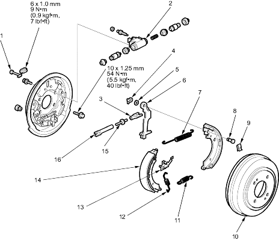

CAUTION
CAUTION
Frequent inhalation of brake pad dust, regardless of material composition, could be hazardous to your health.
- Avoid breathing dust particles
- Never use an air hose or brush to clean brake assemblies. Use an appropriate vacuum cleaner.
Conventional Brake Components
|
19-35 | ||
Frequent inhalation of brake pad dust, regardless of material composition, could be hazardous to your health.
|
NOTE:
4-door
 |
|